從零使用 OuO Bot 建置你的 Discord 伺服器
跟著虛構的「星期三咖啡館」，一步步用 OuO Bot 把空伺服器蓋到可以正式營運。
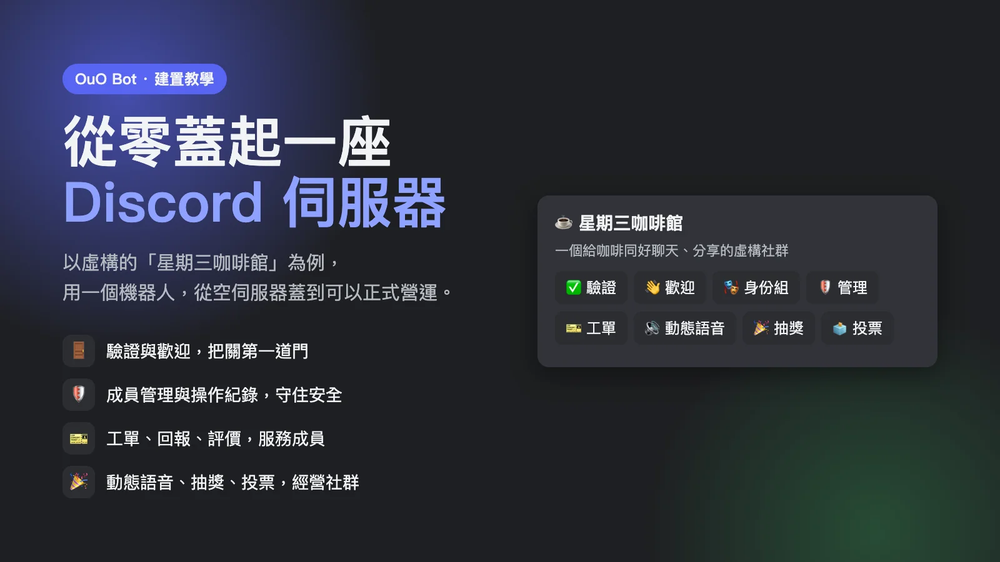
剛開一個 Discord 伺服器時，要做的事比想像中多：新成員要先驗證，進來要有人歡迎，身份組要讓大家自己領，出了問題要有地方回報，活動還需要抽獎與投票。這些事常常得靠好幾個機器人拼湊，每個機器人又有各自的設定方式。
這篇文章用一個機器人 OuO Bot，從一個空的伺服器開始，一步一步蓋到可以正式營運。故事裡的伺服器是虛構的「星期三咖啡館」，是一個給咖啡同好聊天、分享的社群；文中的成員、對話與數字都是範例。
整篇依「蓋伺服器的順序」分成七個階段，每個階段只用到少數幾個功能。不需要一次全部設定，可以從目錄直接跳到需要的段落。
關於圖片
文中所有圖片都是示意圖，用來說明功能的樣子與流程，實際畫面可能與圖中略有落差，請以機器人實際顯示為準。
本文目錄
前置準備：邀請機器人
OuO Bot 的邀請連結已經授予管理員權限，所以不需要再一項一項勾選權限，也不容易因為缺少權限而遇到錯誤。邀請連結放在文章最後的結語，點開之後：
- 登入 Discord，選擇要加入的伺服器（需要有該伺服器的「管理伺服器」權限）。
- 確認授權內容，按下「授權」。
- 機器人加入後，會出現在成員清單裡。
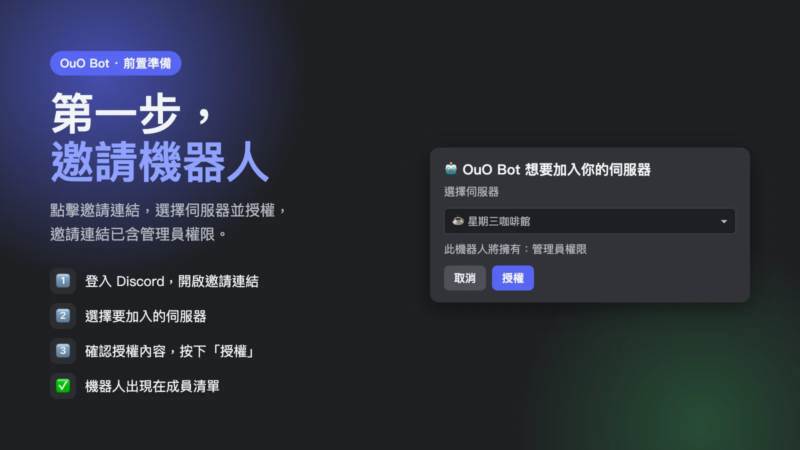
前置準備：把機器人的身份組往上拖
這是新手最常遇到的第一個問題，值得單獨說明。
Discord 規定，機器人只能管理「身份組位置比自己低」的成員與身份組。如果機器人的身份組排在最下面，之後踢出成員、給予身份組、移動語音成員都可能失敗。
做法：開啟「伺服器設定 → 身份組」，把 OuO Bot 的身份組往上拖，放在你要管理的所有身份組上方（通常只在伺服器擁有者與管理員身份組之下）。
之後設定的任何身份組也一樣
之後建立的「已驗證」「新成員」等身份組，都要放在 OuO Bot 的身份組下方，機器人才能把它們發給成員。
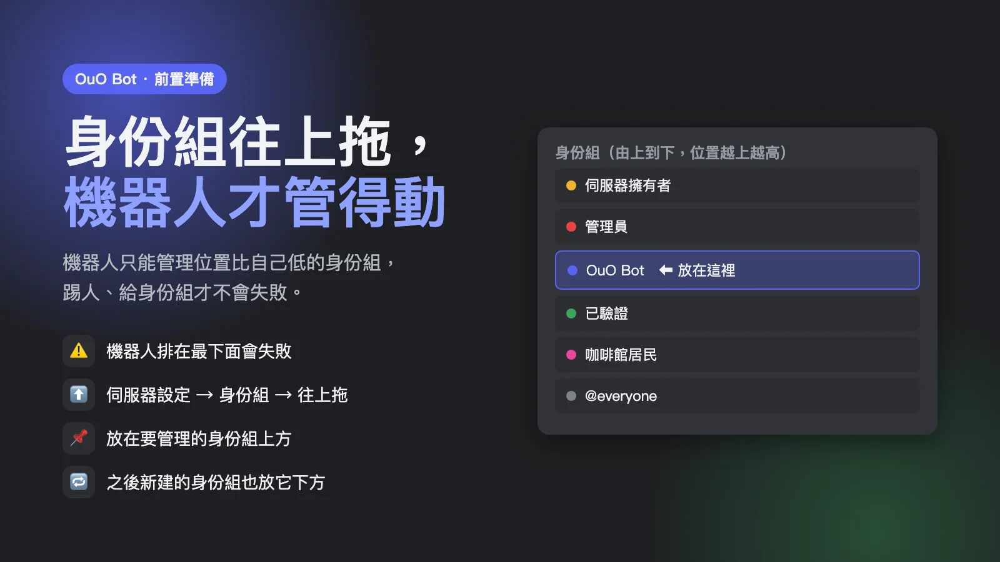
前置準備：認識 setup 面板
OuO Bot 的功能大多用同一種方式設定：輸入 /功能名 setup，例如 /verify setup、/ticket setup，就會跳出一個只有自己看得到的設定面板。面板上用選單選頻道與身份組、用按鈕切換選項，不需要記任何參數。
幾個共通的特點：
- 設定面板需要管理員權限，其他成員看不到。
- 面板會即時提示問題，例如「機器人在這個頻道缺少某某權限」，照著提示處理即可。
- 面板閒置一段時間會失效，重新輸入指令就能再開。
想知道有哪些指令，可以輸入 /help，指令會依功能分類列出。
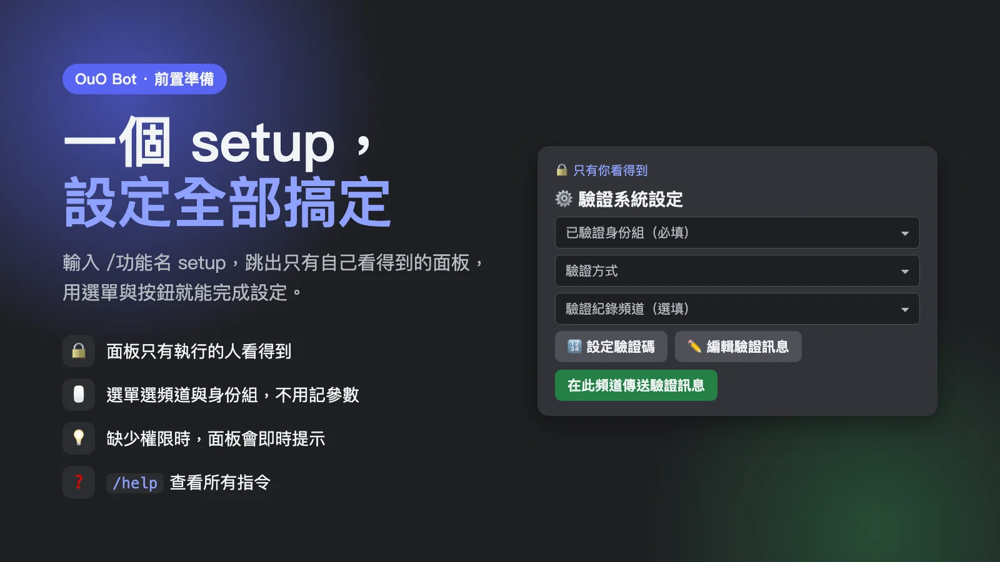
一、打地基：整理頻道與身份組
「星期三咖啡館」剛建好時，只有預設的一堆頻道。第一件事是把結構整理好，OuO Bot 有三個指令處理這件事。
頻道改名：/rename
選擇頻道並輸入新名稱，就能改名。Discord 限制每個頻道 10 分鐘內只能改名 2 次，超過時新名稱會在限制解除後自動套用。
同步類別權限：/syncat
在類別上設定好權限後，用 /syncat 選擇類別，就會把類別內所有頻道的權限同步成與類別一致。適合「設定一次，整個類別一起生效」。
批量給身份組：/allrole
選擇要「給予」或「移除」，對象可選全部成員、只有真人、只有機器人，再選身份組，就會一次處理完。成員很多時需要一些時間，過程中如果有人沒處理成功，會告訴你剩下幾位，調整後可以再執行一次。
例如，咖啡館想給所有現有成員一個「咖啡館居民」身份組，就能用 /allrole 一次完成。
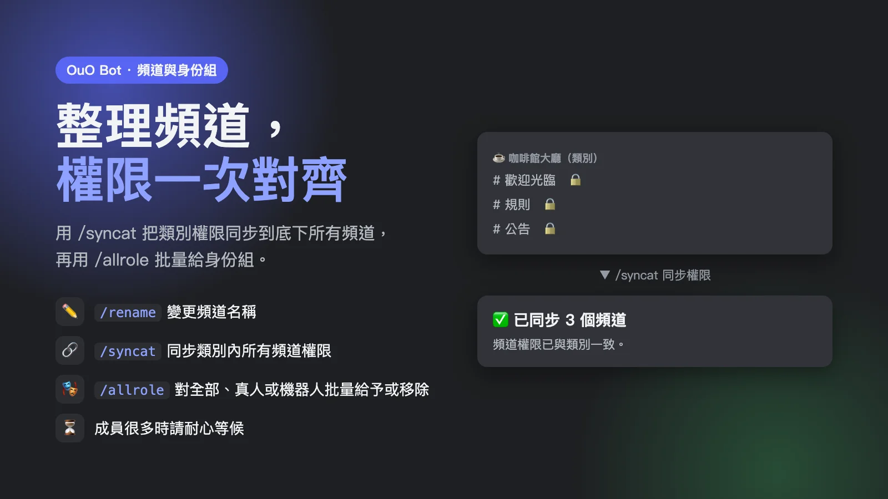
二、大門：驗證與歡迎
頻道整理好，就該決定「誰可以進來」。
驗證系統
輸入 /verify setup，依面板上的三個步驟設定：
- 選擇已驗證身份組（必填）：通過驗證的成員會拿到它。
- 選擇驗證方式：「按鈕驗證」是按一下就通過，適合只想擋掉機器人帳號；「驗證碼」要輸入正確的驗證碼，例如寫在規則頻道裡，可以確保成員有看過規則。
- 到要放驗證訊息的頻道，按「在此頻道傳送驗證訊息」。
另外有兩個選填項目：未驗證身份組（成員加入時給予，通過後移除），以及驗證紀錄頻道（記錄誰完成了驗證）。驗證訊息的標題與說明也能自行編輯。
讓驗證真正有作用
建議設定：讓 @everyone 看不到大部分頻道，只有「已驗證」身份組看得到。這樣新成員必須先驗證，才能使用伺服器。另外，機器人的身份組必須高於已驗證身份組。
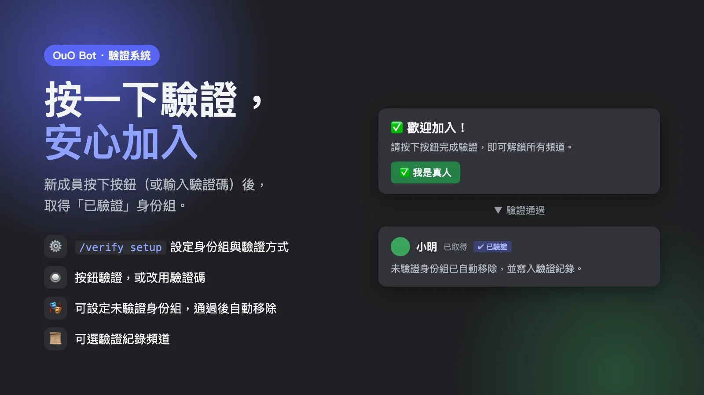
歡迎與離開訊息
驗證完成後，用 /welcome setup 設定歡迎訊息：選擇要傳送的頻道，再編輯訊息內容。訊息可以使用變數：
{@user}：標註成員{user}：使用者名稱{name}：成員在伺服器中的顯示名稱{guild}：伺服器名稱{count}：目前成員數
預設訊息是「{@user} 加入了 {guild}」。面板會顯示以你為範例的預覽，也能按「傳送測試訊息」實際送一則看看。想要成員被標註時不收到通知，可以關閉「通知新成員」。
成員離開時的訊息用 /leave setup，設定方式相同。
自動給身份組
/welcome role 可以設定成員加入時自動拿到的身份組，真人與機器人可以分別設定，各最多 5 個。如果伺服器有開啟 Discord 的「規則篩選」，建議開啟「等待規則篩選」，成員通過規則後才給身份組。
看成員流動
/show 可以查看成員流動統計，能切換最近 7、14、30 天。
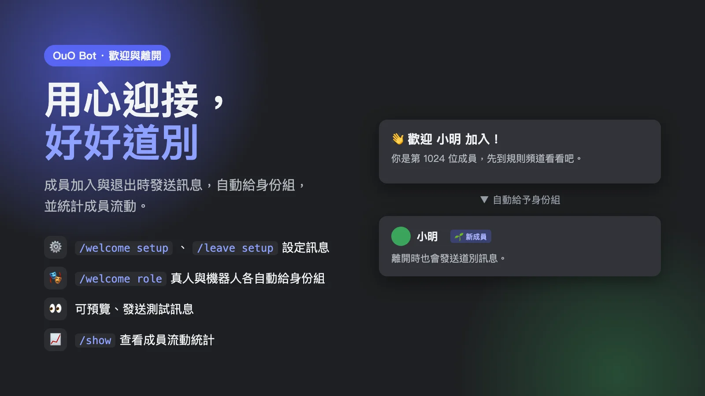
三、讓成員自己領身份組
伺服器要分顏色、分興趣、訂閱通知時，與其由管理員一個一個發，不如讓成員自己按表情領取。
最簡單的做法：
- 先傳一則說明訊息，例如「想要哪個身份組就按對應的表情」。
- 在那則訊息上按右鍵 →「應用程式」→「設定反應身份組」（手機版是長按訊息）。
- 在面板選擇身份組，按「設定表情」並輸入表情，送出。
- 重複步驟 3，一則訊息可以設定多組。
機器人會自己先按上那個表情，成員跟著按就會拿到身份組，取消反應就會移除。
也可以用 /role add 直接新增一組，或用 /role remove 移除；/role setup 會列出伺服器裡所有的反應身份組。
整則訊息共用一種發放模式：
| 模式 | 適合情境 |
|---|---|
| 按下給、取消移除（預設） | 顏色、通知訂閱 |
| 只給不移除 | 同意規則、一次性領取 |
| 單選互斥 | 只能選一個的顏色或分組 |
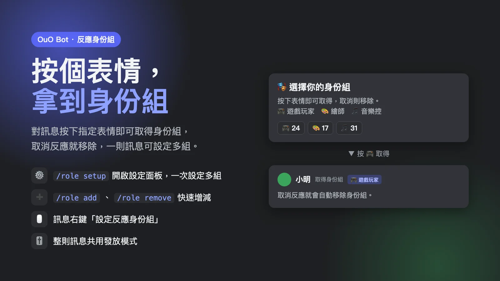
四、守住安全：成員管理與操作紀錄
社群開始有人之後，就需要處理違規成員，並留下紀錄。
成員管理
OuO Bot 提供常用的管理指令：
/kick：踢出成員/ban：封禁使用者/timeout、/untimeout：禁言與解除禁言/clear：批量刪除訊息，一次可刪 1 到 1000 則
/kick 與 /ban 在執行前會要求再按一次確認，避免誤按。確認與錯誤訊息只有執行的人看得到，成功後才會在頻道貼出處理卡片。
也可以在成員上按右鍵 →「應用程式」→「管理成員」，開啟一個集中顯示成員資訊與管理按鈕的面板。
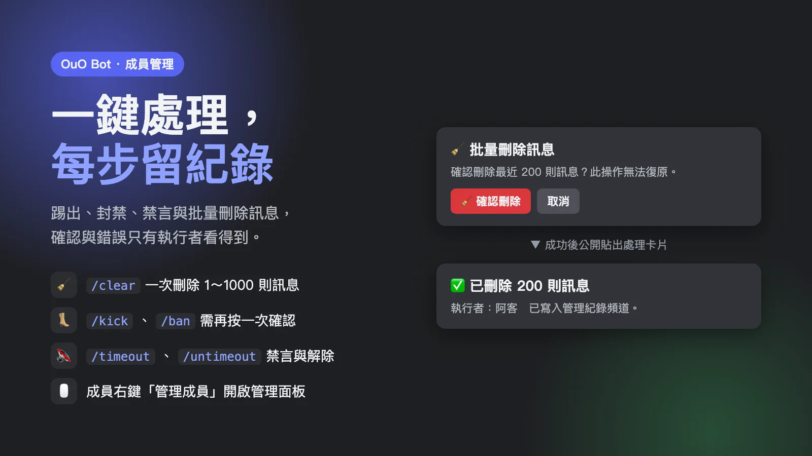
操作紀錄
管理動作多了，就需要有跡可循。/log setup 可以為三種紀錄各自選擇紀錄頻道：
- 管理操作：
/kick、/ban、/timeout、/clear、/allrole與「管理成員」面板的處理紀錄 - 語音進出：成員加入、離開、移動語音頻道
- 身份組變更：身份組的名稱、顏色、權限等變更
三種紀錄可以送到同一個頻道，也可以分開。建議把紀錄頻道設成只有管理團隊看得到。
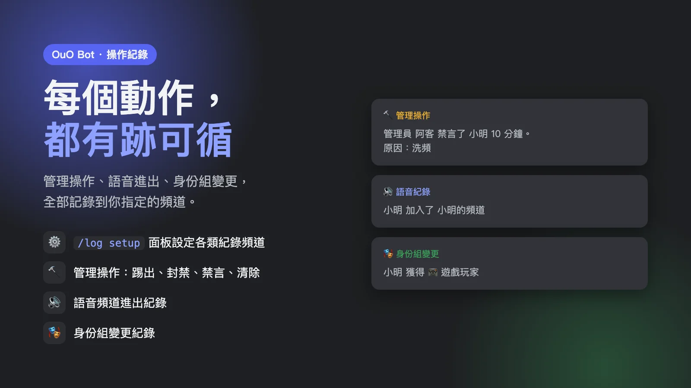
五、服務成員：工單、回報、評價與匿名
伺服器變大後，成員會有各種需求。這一階段的四個功能，分別處理不同性質的需求。
工單：一對一的私人協助
成員有問題需要客服處理時，用工單最合適。輸入 /ticket setup 設定：
- 工單頻道：私人討論串會開在這個頻道裡。
- 預設客服身份組：可以不選。
- 紀錄頻道：可以不選，不選就不傳送紀錄。
- 每人可開張數：1 到 5 張。
- 工單類型：例如「一般問題」「合作洽談」，每種類型可以有自己的客服身份組與圖示。有兩種以上類型時，成員開單要先選類型。
設定完成後按「張貼開單面板」，就會在工單頻道放上有「開啟工單」按鈕的訊息。
成員按下按鈕、填寫主題與內容後，機器人會開一個私人討論串，只有開單者、客服身份組與有「管理討論串」權限的人看得到。討論串裡有工單卡片，上面有「結案」與「管理成員」按鈕：開單者與客服都能結案，只有客服可以拉人進出，也只有客服可以重新開啟已結案的工單。結案時，結案卡片會送到紀錄頻道，並私訊給開單者。
成員開單後 30 秒內不能再開，避免重複洗單。
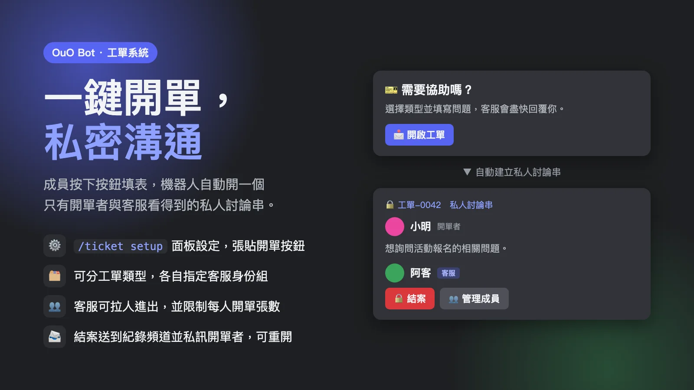
回報：檢舉與意見
回報與工單的差別在於：回報是「單向通知管理團隊」，不需要來回溝通。輸入 /report setup，設定回報頻道與（選填）通知身份組，再決定「處理後是否通知回報者」，然後張貼回報按鈕（預設標題是「回報中心」）。
成員按下按鈕會看到表單：主題、回報對象（選填，可選擇要檢舉的成員）、內容與附件。送出後，內容會送到回報頻道，管理員可以直接在回報上標記「處理中」「已處理」「駁回」。成員每 60 秒最多送出一次回報。
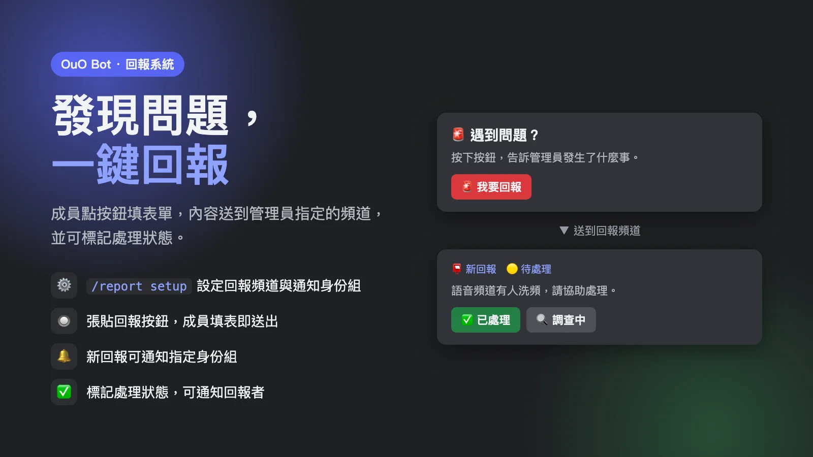
評價：讓成員留下公開回饋
適合交易、委託、活動這類需要累積口碑的社群。輸入 /comment setup：
- 選擇評價頻道：評價會以成員的名稱與頭像出現在這裡。
- 設定評價資格：選擇一個身份組，只有擁有它的成員才能評價；不選則所有成員都能評價，但每人每 24 小時限一則。
- 設定資格身份組時，可按「建立『未評價』身份組」，並決定送出評價後是否移除該身份組。
最後按「在這個頻道張貼評價按鈕」，成員也可以直接輸入 /comment send。
評價表單包含 1 到 5 顆星、評價項目與心得內容。例如咖啡館完成一次豆子團購後，管理員把「未評價」身份組發給參與者，他們評價完身份組就會被移除。
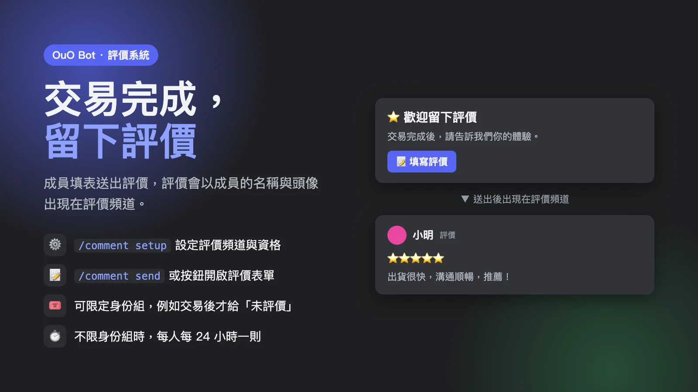
匿名訊息：說出不方便署名的話
輸入 /anony setup，選擇匿名訊息要送達的頻道，再設定兩件事：
- 匿名編號方式：「每則訊息隨機編號」看不出是不是同一人；「每天固定編號」同一天同一位成員的編號相同，比較好跟上對話。
- 發送間隔：每位成員每隔多久最多一則。
成員用 /anony send 開啟表單傳送，訊息會以「匿名使用者」的身分出現在頻道。
遇到濫用時，管理員可以對匿名訊息按右鍵 →「應用程式」→「Block Anony Sender」封鎖發送者，過程中不會看到對方是誰。
關於匿名
匿名是對其他成員與管理員而言。依機器人設定面板上的說明，為了處理違反 Discord 規範的內容，OuO Bot 開發團隊會保留匿名訊息的發送紀錄。
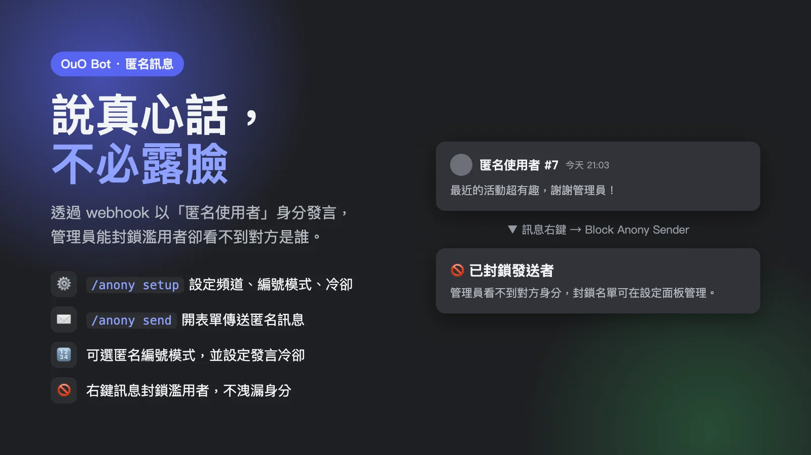
六、經營社群：讓頻道保持活力
基本結構穩定後，可以開始經營日常。
指令頻道：讓機器人指令不洗版
有些頻道專門讓成員使用機器人指令，用久了訊息會堆成一堆。輸入 /command setup，選擇頻道，再設定：
- 保留時間：從 10 秒到 1 天，多個檔位可選。
- 刪除對象：所有訊息、只刪除成員的訊息、或只刪除機器人的訊息。
按「設為指令頻道」就會生效；也可以按「在頻道張貼說明」，讓成員知道這個頻道的訊息會自動消失。釘選的訊息不會被刪除，設定前就存在的訊息與討論串也不受影響。每個伺服器可以設定多個指令頻道。
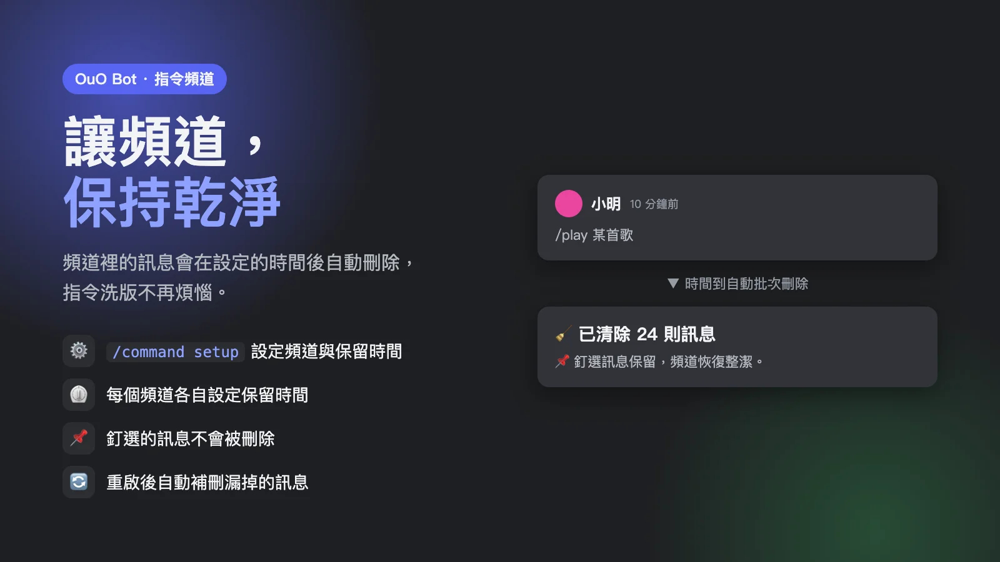
動態語音：進頻道就有自己的房間
固定開很多語音頻道，常常有的擠、有的空。動態語音只需要一個「觸發頻道」：成員加入後，機器人會自動建立一個屬於他的語音頻道，把他移進去；頻道沒人時就自動刪除。
輸入 /dvc setup，可以按「自動建立觸發頻道」，或選擇現有的頻道設為觸發頻道，再設定：
- 新頻道建立在哪個類別
- 新頻道的人數上限
- 頻道名稱，預設是「┣ {user} 的頻道」，
{user}會換成成員名稱
每個伺服器最多 5 個觸發頻道。機器人建立頻道後，會在頻道的文字聊天室放上控制面板，擁有者可以改名、設定人數上限、上鎖或解鎖、轉移擁有權、解散頻道。擁有者離開但頻道還有人時，擁有權會自動轉給頻道裡的其他成員。
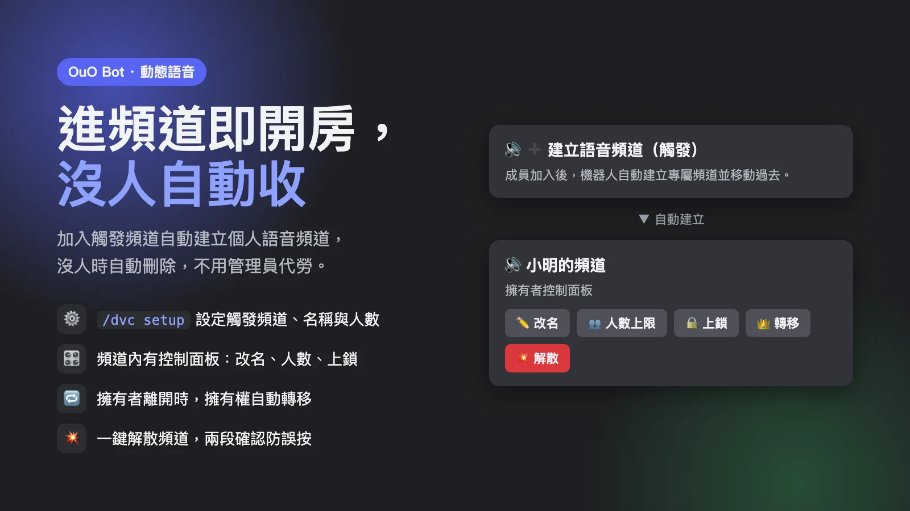
投稿評分：讓社群用投票篩出好內容
適合作品展示、迷因、建議箱這類頻道。輸入 /showcase setup，選擇投稿頻道，之後在這裡傳送的新貼文，機器人都會自動加上「贊成」與「反對」兩個表情（預設是 👍 與 👎）。
還能設定：
- 自動開討論串：每則貼文開一個「討論串 #N」，N 在各伺服器內各自遞增。
- 精選頻道與門檻：得分（贊成減反對）達到門檻時，貼文會轉發到精選頻道，每則只轉一次。
成員可以用 /showcase top 查看排行（可選最近 24 小時、7 天、30 天或全部），用 /showcase stats 查看成員的投稿統計。
贊成與反對是互斥的：投了一邊，另一邊就會被移除。這需要機器人在頻道有「管理訊息」權限；管理員身份下通常已具備。
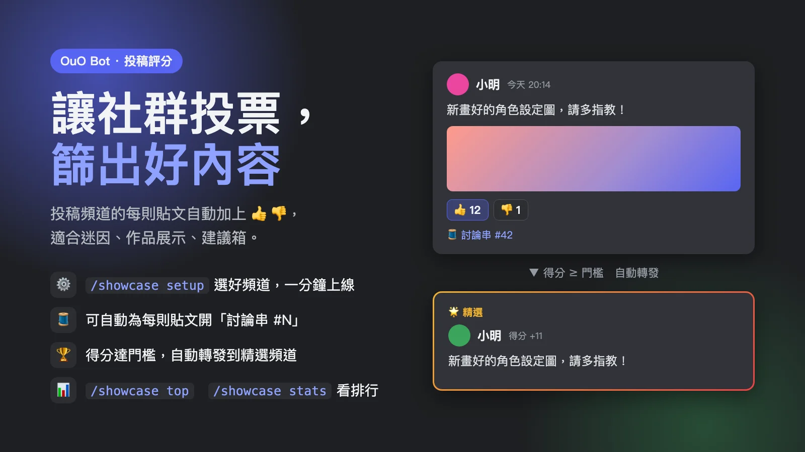
公告：用嵌入訊息排版
規則、活動公告通常需要比較好看的格式。直接輸入 /embed（不帶參數），會開啟只有自己看得到的產生器：
- 按「編輯文字」填寫標題與內容，支援 Discord 的 Markdown。
- 按「顏色與圖片」設定顏色（16 進位色碼）、大圖與縮圖網址。
- 一邊預覽，滿意後選擇要送到的頻道，按「送出」。
已經送出的嵌入訊息，也能在訊息上按右鍵 →「應用程式」→「編輯嵌入訊息」修改。
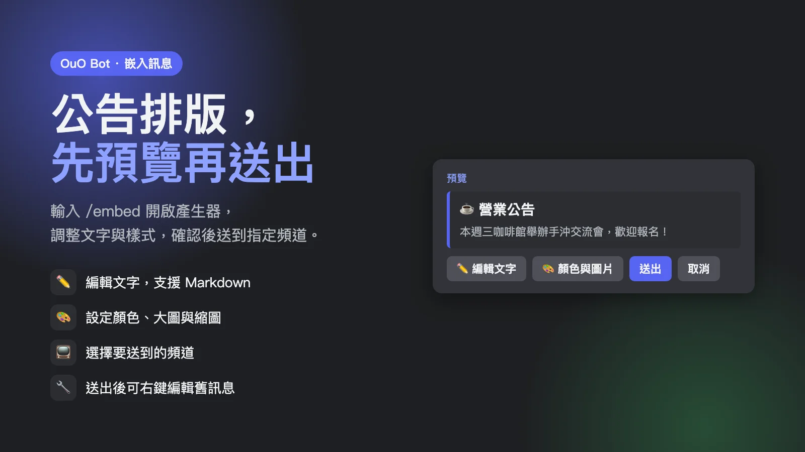
七、辦活動：抽獎、投票與其他
社群有了基本的人氣，就可以辦活動了。
抽獎
輸入 /giveaway 開啟控制面板，建立、開獎、取消、重新抽獎、查看與刪除紀錄都在這裡。有兩種模式：
- 按鈕抽獎：成員按「參加抽獎」參加，再按一次可以退出。
- 發言抽獎：統計指定頻道在一段期間內發言的成員，同一人發言多次只算一次，開始時間可以填過去的時間（最多往前 30 天）。
得獎人數可設 1 到 20 人。時間可以用 1d、2h30m、明天 21:00 這類寫法，一律當成臺灣時間，最長可設定到 60 天後。到了開獎時間，機器人會自動開獎。
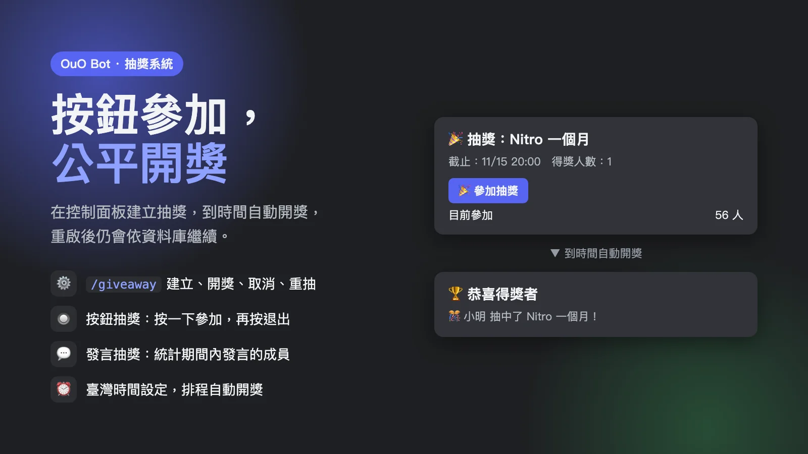
投票
要決定下次活動辦什麼、頻道怎麼分，用投票最直接。輸入 /vote 開啟控制面板發起投票：
- 選項：2 到 25 個，用逗號或換行分隔。
- 截止時間：例如
1d、明天 21:00，時間到自動結束，也可以不填、改成手動結束。 - 進階選項：可以複選、結束前隱藏結果、記名投票。記名投票會在訊息上註明，只有發起人與管理員能查看誰投了什麼。
有「管理訊息」權限的人可以管理所有投票，其他成員只能管理自己發起的，同時最多 10 個進行中。
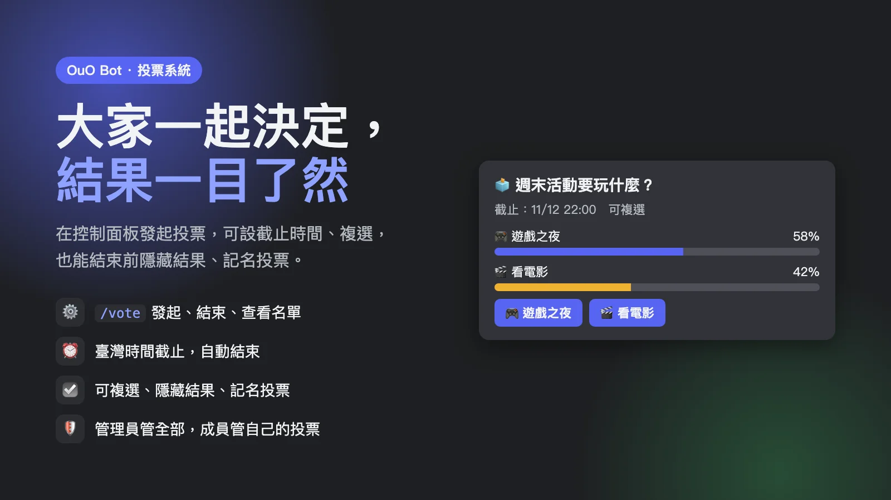
蕃茄鐘：一起專注
咖啡館也有人用來讀書、趕作業。/pomodoro setup 提供一鍵開始的專注計時，內建多種工作與休息的組合，例如「經典蕃茄鐘」25 分鐘工作、5 分鐘休息，「深度專注」50 分鐘工作、10 分鐘休息，也可以自訂名稱、小目標、分鐘數與輪數。
群組與機器人私訊都能使用。在群組裡可以邀請其他成員一起專注、建立討論串，階段切換時機器人會通知並附上小提示；/pomodoro status 可以查看進行中的蕃茄鐘與個人專注統計，/pomodoro stop 可以提前結束。
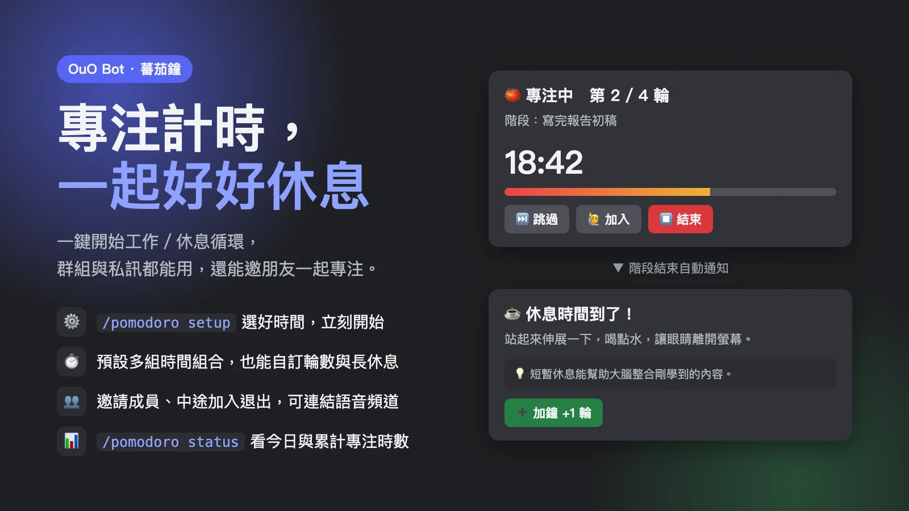
答案之書：猶豫的時候翻一頁
輸入 /choices，可以填入你在猶豫的事，也可以留空在心中默念，機器人會翻開一頁給你答案。同一個人、同一個問題、同一天會翻到同一頁，避免一直重問直到滿意。這是一個適合放在閒聊頻道的小功能。
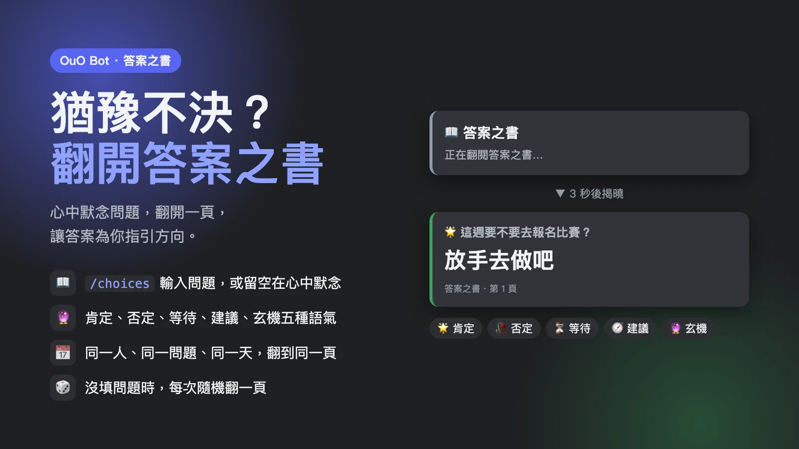
結語：把整座咖啡館蓋起來
回顧「星期三咖啡館」的建置順序：
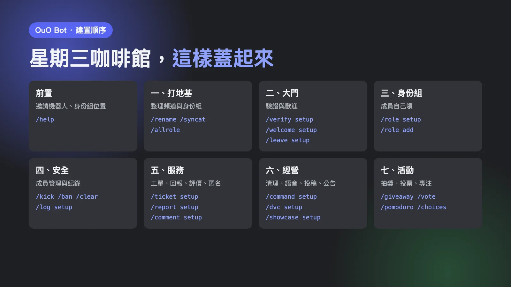
| 階段 | 做的事 | 用到的指令 |
|---|---|---|
| 前置 | 邀請機器人、調整身份組位置 | /help |
| 一 | 整理頻道與身份組 | /rename、/syncat、/allrole |
| 二 | 驗證、歡迎與自動身份組 | /verify setup、/welcome setup、/leave setup、/welcome role、/show |
| 三 | 成員自己領身份組 | /role setup、/role add |
| 四 | 成員管理與操作紀錄 | /kick、/ban、/timeout、/clear、/log setup |
| 五 | 工單、回報、評價、匿名 | /ticket setup、/report setup、/comment setup、/anony setup |
| 六 | 指令頻道、動態語音、投稿評分、公告 | /command setup、/dvc setup、/showcase setup、/embed |
| 七 | 抽獎、投票、蕃茄鐘、答案之書 | /giveaway、/vote、/pomodoro setup、/choices |
不必一次全部設定。先做驗證、歡迎與身份組，讓伺服器能安心開放給第一批成員；之後遇到什麼需求，再回到對應的段落加上功能。
如果想試試看，或在設定時遇到問題，可以透過下面的連結：